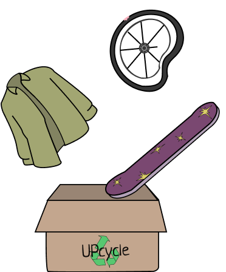

Upcyclen?
Jouw afgedankte spullen worden eerst waardevolle grondstoffen die uiteindelijk worden verwerkt tot product(en) met meerwaarde. Het product verliest dus geen kwaliteit maar word juist beter.
Grondtap
Grondstoffen verzamelen leidt to veel water- en energieverbruikt. Door de levensduur van producten te verlengen is er minder behoefte om meer grondstoffen te winnen.
CO2
Door materialen opnieuw te gebruiken, word de productie van nieuwe materialen en producten verminderd. De CO2-uitstoot die gepaard gaat met die productieprocessen word hierdoor ingeperkt. Het broeikaseffect word niet versterkt.
Geldbesparen
Met upcyclen bespaar je ook geld. Doordat jij de levensduur van jouw spullen verlengt heb je minder tot geen behoefte aan nieuwe(duurdere) spullen. Zo heb je meer geld om uit te geven aan andere dingen of je kan het natuurlijk sparen.
Uniek
Naast alle bovengenoemde voordelen maakt het jou ook nog eens uniek. Een riem, lamp of tas die door jou is gemaakt. Hoe vet is dat!